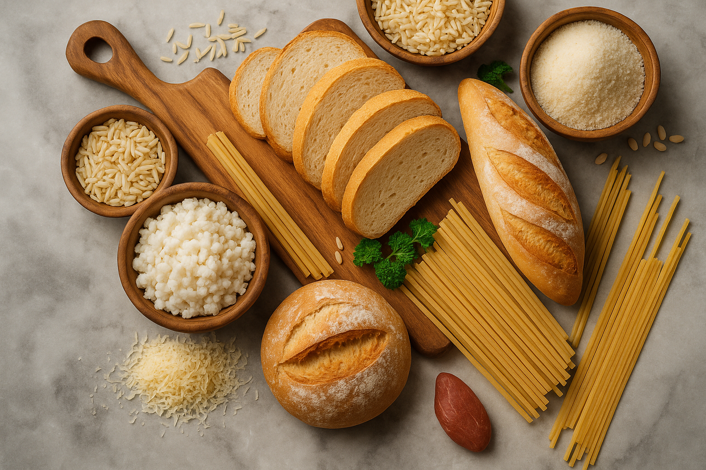
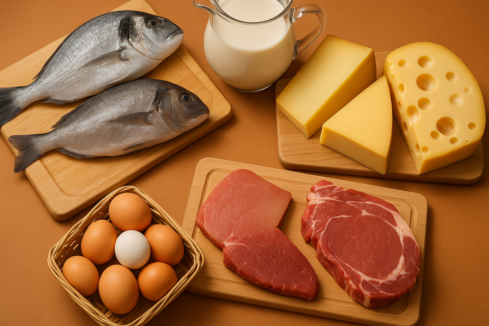
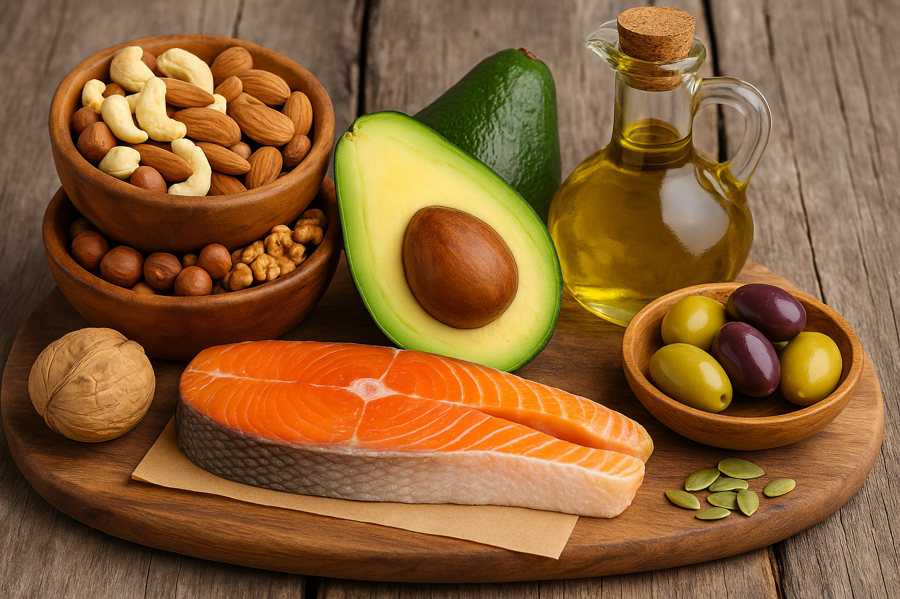

🧪 Compostos Orgânicos nos Alimentos
🥖 Carboidratos
Os carboidratos são compostos formados por carbono, hidrogênio e oxigênio. Eles são classificados em: monossacarídeos (como a glicose), dissacarídeos (como a sacarose) e polissacarídeos (como o amido e a celulose). São a principal fonte de energia rápida do organismo. Quando ingeridos, os carboidratos são quebrados em glicose, que é absorvida pelo intestino e transportada até as células para gerar energia através da respiração celular. Na culinária, participam de reações importantes como a caramelização e a Reação de Maillard. Carboidratos também são essenciais na fermentação, como na produção de pães e bebidas alcoólicas.
🍗 Proteínas
As proteínas são formadas por cadeias de aminoácidos unidos por ligações peptídicas. Elas desempenham papéis estruturais (como no tecido muscular), funcionais (como as enzimas e hormônios), e imunológicos (como anticorpos). Ao serem aquecidas, as proteínas sofrem desnaturação, perdendo sua estrutura tridimensional e alterando sua funcionalidade. Essa transformação é visível, por exemplo, quando a clara de ovo fica branca ao cozinhar. A Química explica também a digestão das proteínas: elas são quebradas por enzimas como a pepsina e a tripsina, gerando aminoácidos que serão usados na construção de novas proteínas pelo corpo.
🥑 Lipídios
Os lipídios são compostos orgânicos apolares, insolúveis em água, e servem como reserva energética, isolantes térmicos e estruturais (formando membranas celulares). Eles estão presentes em óleos, gorduras, manteigas, sementes, carnes e abacates. Além de fornecerem energia, auxiliam na absorção de vitaminas lipossolúveis (A, D, E e K). Quando oxidados pelo calor e pelo ar, sofrem rancificação, o que compromete o sabor e o aroma dos alimentos. A composição química dos lipídios (saturados ou insaturados) influencia diretamente sua estabilidade e seus efeitos na saúde.
🍊 Vitaminas

As vitaminas são micronutrientes indispensáveis ao funcionamento do corpo, atuando como cofatores em diversas reações químicas. Elas se dividem em dois grupos:
Hidrossolúveis: como as do complexo B e a vitamina C, que não são armazenadas e precisam ser repostas diariamente.
Lipossolúveis: como as vitaminas A, D, E e K, que são absorvidas junto com os lipídios e podem ser armazenadas no fígado.
O preparo dos alimentos pode degradar as vitaminas — especialmente a C e as do complexo B. A vitamina A é mais resistente ao calor, mas ainda sofre perdas com o cozimento prolongado. Já a vitamina D pode ser obtida pela exposição solar, além da alimentação. A vitamina K está presente em folhas verde-escuras e é essencial para a coagulação sanguínea.